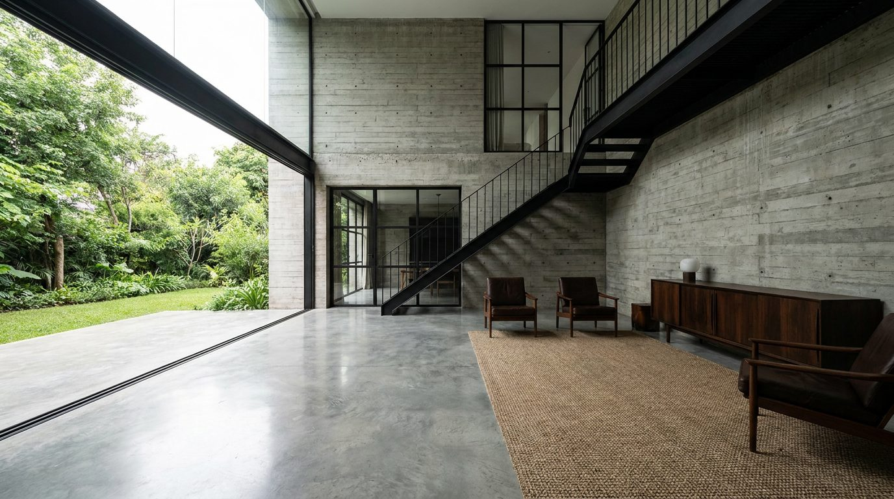

Atlante · IT-13 · Italia
Villa contemporanea in cemento e vetro
Esempi · esterno e interno


Architettura · elementi riproducibili
- calcestruzzo a vista (tavelle 120x60, fori di ripresa visibili), altezza 3-4 m e spazi a doppia altezza
- vetrate a tutta altezza 4-6 m
- pavimenti in microcemento o pietra
- scale a sbalzo
- patii interni e lucernari
- Il cemento è il fondo neutro perfetto per arredi saturi: è la tipologia che regge meglio il color full.
Luce
zenitale da patii e lucernari + laterale da vetrate; ombre scolpite, mezzogiorni duri da evitare.
Prompt di generazione (EN)
Contemporary concrete villa, board-formed exposed concrete volumes, double-height living space, 5 m glass wall to a patio, microcement floor, cantilevered stair, light from an overhead patio slot plus side glazing, 20 mm, cool neutral grade with one deep green upholstery.
Riferimenti reali
- "Villa with internal view" apri ↗